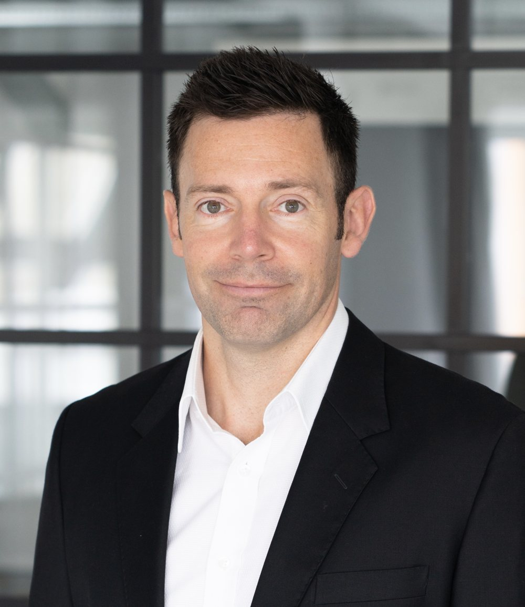

Clear direction for Salesforce and AI.
Vector Outcomes helps organisations become agentic enterprises with Salesforce and Agentforce. A clear heading, calm execution and results you can measure.
Every force is a vector.
Effort without direction goes nowhere. Newton described it, pilots live by it, and it is the difference between AI projects that stall and those that deliver.
Inertia
Organisations stay on their current course until a clear force acts on them. AI is no exception.
Direction
Acceleration follows the direction of the force. We make sure your investment points the right way before it gathers speed.
Reaction
Every change meets resistance from people and systems. We plan for it, so adoption lands softly.
From first idea to agents in production.
Strategic Roadmap and Readiness
Find the use cases worth building, assess your data and org, and get a realistic roadmap your leadership can back.
Reliable Agents at the Front Line
Topics, actions, guardrails and human in the loop checkpoints. Agents that behave predictably in front of your customers.
Trustworthy Data Infrastructure
Connect the data your agents need to answer correctly, with the structure and permissions that keep it trustworthy.
Architecture You Can Build On
An independent architect's view of your Sales and Service Cloud setup: technical debt, scalability and what to fix first.
Outcome Aligned Operating Model
Roadmap, backlog and stakeholder alignment, so your Salesforce platform is steered by business value rather than the loudest request.
Governance for Sustainable Scale
The structure to scale AI responsibly, from executive sponsorship to use case intake, risk review and measurable outcomes.
How we fly a project.
Preflight
A checklist driven look at goals, data, processes and risk.
Clearance
Roadmap, success criteria and governance agreed before anything is built.
Takeoff
A first agent or improvement in production, with humans in the loop from day one.
Cruise
Measure, refine and scale what works. Steady, level flight.
Touchdown
Your team takes the controls.
- Skill up programs for internal teams
- Structured internal certification tracks
- Knowledge transfer and playbooks
- Full transition to internal team autonomy
From rule based bot to autonomous Agentforce agent.
Thomas led the launch of an Agentforce support agent serving 73 million users worldwide, evolving a rule based chatbot into an autonomous agent that resolves order and account questions on its own. Salesforce's CEO featured the story on the Q1 FY27 earnings call as a flagship example of an agentic enterprise in production.
[Client name, pending approval]
One of the best Salesforce experts I have ever worked with. He has a unique ability to challenge our business processes constructively while always advocating for Salesforce best practices and standards.
His understanding of Salesforce goes far beyond the surface. He has deep technical expertise and a strong ability to turn complex requirements into solid, scalable solutions.
Thomas' optimistic nature and structured approach makes him a fantastic asset to any team. I was especially impressed with his ability to overcome complex issues and learn new concepts extremely quickly.

From the flight deck to Agentforce.
Vector Outcomes is run by Thomas Bentzen, Salesforce Application Architect and former Boeing 777 Captain with Emirates. Over six years in the Salesforce ecosystem he has worked as developer, business analyst, architect and product owner across ecommerce, telco and energy.
Seventeen years in aviation, including Crew Resource Management training at Emirates, taught him that the best automation keeps a calm, trained human in command. He brings the same discipline to AI agents: clear procedures, crosschecks and a steady hand when conditions change.
He starts every engagement by asking why, so each change has a clear purpose and a measurable outcome. He always asks what the simplest solution is that meets the business need, going standard first and building custom only when standard tools reach their limits.
15 Salesforce certifications. Trailhead All Star Ranger.
Ready for smooth air?
Book a 30 minute intro call. No slides and no hype, just an honest conversation about where you are and where you want to go.
Book an intro call[EMAIL] · Based in Denmark, working remotely in English and Danish